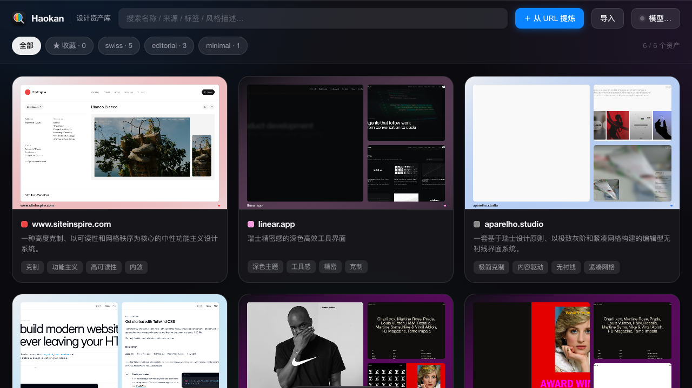
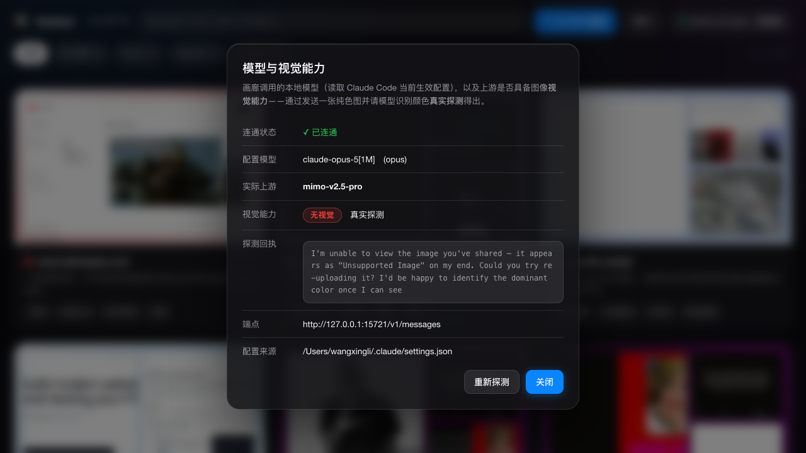

把好看的网页，
提炼成可复用的设计资产
Haokan 从任意网站抽取真实的颜色、字体、间距、圆角、阴影与动效，去噪成一套 设计 token（.stylepack），用来约束 AI 编码工具的产出，从源头消除“AI 味”。
macOS · 应用未签名，首次打开请右键点图标选“打开”，或运行
xattr -dr com.apple.quarantine /Applications/Haokan.app。也可用 CLI：node src/cli.js <url>
Features
从抓取到落地，一条完整的“设计资产”流水线
◲
站点级采样
结合 sitemap 与页面内链挑选代表性页面——跨页一致的元素，才是有意为之的设计系统。
◆
确定性抽 token
颜色按感知色差 ΔE 聚类、间距吸附基准栅格、字号推断字阶，数值全部来自真实测量，绝不臆造。
✎
设计语言合成
本地模型只做“解释与命名”，输出设计原则、Do/Don’t 与美学标签，不产生数值。
✓
设计 lint 校验闭环
用 token 反查项目代码：颜色/圆角/字体/动效是否越界，并识别“AI 味”信号，给出合规分与修正建议。
⧉
一键应用到 AI 项目
导出 CSS 变量 / Tailwind 配置 / AI 规则，写入 .cursorrules、CLAUDE.md、AGENTS.md 或 Kiro steering。
◐
展示 / 正文字体分离
区分标题展示字体与正文字体，按字体类型自动选择回退族，避免大标题误用等宽或正文字体。
How it works
URL 进，.stylepack 出
01
站点级采样发现代表性上下游页面02
截图 + 计算样式单次加载，多视口截图并抽真实样式03
去噪成 token聚类 / 吸附 / 归纳成设计系统04
合成设计语言本地模型解释与命名05
打包 .stylepack含可双击浏览的 preview.htmlModel & Vision
用什么模型、有没有视觉，App 里一目了然
画廊顶栏的模型徽章实时显示当前调用的模型与视觉能力。视觉能力不是靠猜——而是发送一张纯色图让模型识别颜色的真实探测：答对即支持、答错或自述“看不到图”即无视觉。
- 配置模型 → 真实上游：如 claude-opus-5[1M] → mimo-v2.5-pro
- 视觉能力：支持 / 无视觉 / 未知，并标注判定来源
- 探测回执：展示模型原话，连通状态、端点、配置来源一并可见
- 可重新探测：切换上游模型后一键刷新
